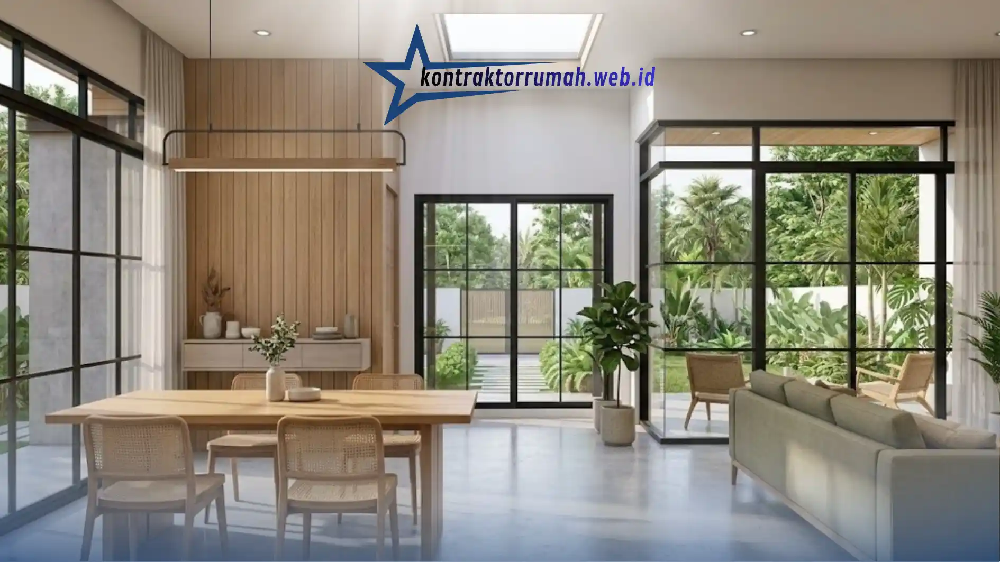

Gaya hidup praktis membuat desain rumah minimalis tidak pernah sepi peminat. Membangun rumah satu lantai kini bukan lagi soal keterbatasan lahan atau dana, melainkan pilihan sadar untuk menciptakan hunian yang efisien, mudah dirawat, dan tetap tampil menawan.
Bagi Anda yang sedang mengumpulkan referensi sebelum bertemu arsitek, berikut beberapa gaya rumah minimalis 1 lantai yang sedang tren.
Poin Penting
- Minimalis tropis cocok untuk iklim Indonesia dengan bukaan besar & cross ventilation.
- Japandi ideal untuk lahan terbatas di bawah 90m² dengan furnitur multifungsi.
- Industrial minimalis memanfaatkan material unfinished: semen ekspos, besi hitam, dan skylight.
- Pertimbangkan iklim, luas lahan, dan anggaran perawatan jangka panjang sebelum memilih gaya.
- Kumpulkan minimal 5-10 referensi gambar dari gaya yang sama agar arsitek menangkap visi Anda lebih akurat.
Minimalis Tropis
Gaya ini paling cocok untuk iklim Indonesia yang lembap dan panas. Ciri khasnya:
- Jendela kaca besar untuk pencahayaan alami dan mengurangi kebutuhan lampu di siang hari.
- Sirkulasi udara silang (cross ventilation) agar rumah tetap sejuk tanpa AC sepanjang waktu.
- Fasad kombinasi cat putih dengan elemen kayu atau batu alam.
- Tanaman hijau di area teras sebagai peneduh sekaligus elemen dekoratif.
Cocok untuk lahan 6x12m ke atas dengan orientasi rumah menghadap timur-barat agar sinar matahari pagi masuk optimal.
Japandi (Japanese-Scandinavian)
Gaya ini populer di kalangan keluarga muda karena kesan tenang dan fungsional. Ciri khasnya:
- Garis desain bersih tanpa ornamen berlebihan.
- Palet warna earth tone: cokelat muda, krem, hijau sage.
- Furnitur multifungsi untuk memaksimalkan ruang terbatas.
- Material alami seperti kayu dan rotan pada elemen interior.

Palet earth tone dan material alami jadi ciri khas interior bergaya Japandi.
Japandi sangat cocok untuk lahan terbatas (di bawah 90m²) karena filosofinya memang mengutamakan efisiensi ruang.
Industrial Minimalis
Konsep ini menggunakan material unfinished sebagai daya tarik utama:
- Dinding semen ekspos atau bata merah tanpa plester.
- Rangka besi hitam pada pintu, pagar, atau railing tangga.
- Skylight atau bukaan besar agar ruangan tidak terasa gelap dan lembap.
- Lantai beton poles (polished concrete) sebagai pengganti keramik.
Tips Memilih Gaya yang Tepat
Sebelum memutuskan, pertimbangkan tiga hal: iklim di lokasi rumah Anda, luas lahan yang tersedia, dan anggaran perawatan jangka panjang (misalnya, dinding ekspos butuh coating anti-lembap berkala). Kumpulkan minimal 5-10 referensi gambar dari gaya yang sama agar arsitek atau tukang bisa menangkap visi Anda dengan lebih akurat.
Catatan dari tim Kontraktor Rumah: Tim kami terbiasa menerjemahkan referensi gambar menjadi gambar kerja dan RAB yang detail, sehingga hasil akhir bangunan tetap sesuai dengan inspirasi yang Anda kumpulkan sejak awal.
FAQ Seputar Rumah Minimalis 1 Lantai
Tidak ada gaya yang paling benar — pilihan terbaik adalah gaya yang paling sesuai dengan iklim, lahan, dan gaya hidup keluarga Anda. Dengan referensi yang jelas sejak awal, proses konsultasi dengan arsitek atau kontraktor pun akan berjalan jauh lebih efisien.